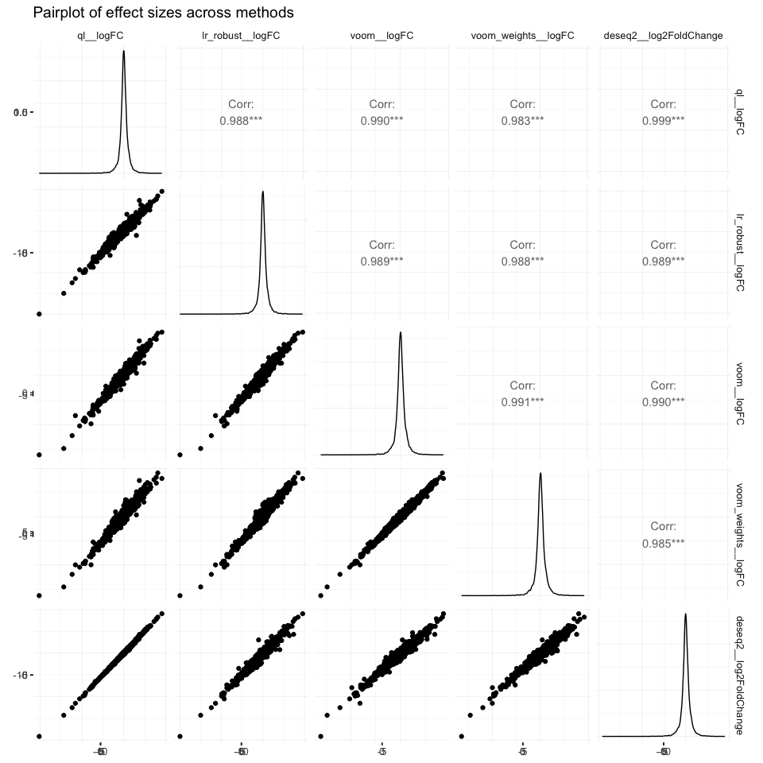
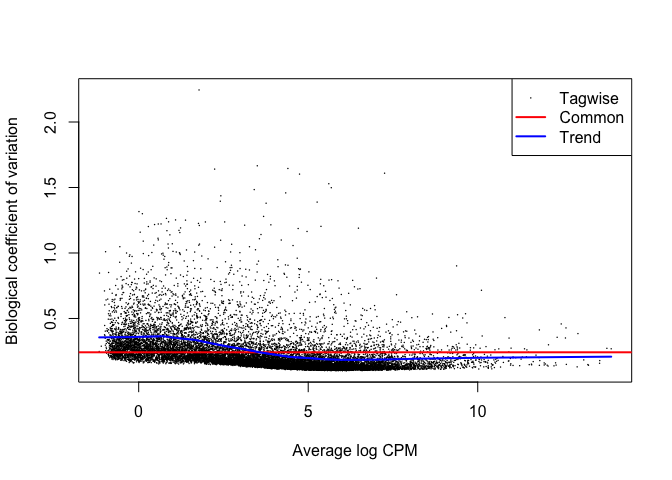
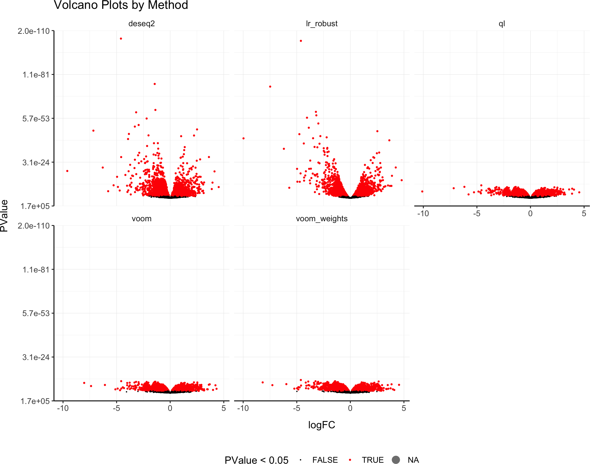

tidybulk is a powerful R package designed for modular transcriptomic data analysis that brings transcriptomics to the tidyverse.
Why tidybulk?
Tidybulk provides a unified interface for comprehensive transcriptomic data analysis with seamless integration of SummarizedExperiment objects and tidyverse principles. It streamlines the entire workflow from raw data to biological insights.
Functions/utilities available
Abundance Normalization Functions
| Function | Description |
|---|---|
scale_abundance() |
Scale abundance data |
quantile_normalise_abundance() |
Quantile normalization |
adjust_abundance() |
Adjust abundance for unwanted variation |
fill_missing_abundance() |
Fill missing abundance values |
impute_missing_abundance() |
Impute missing abundance values |
Filtering and Selection Functions
| Function | Description |
|---|---|
identify_abundant() |
Identify abundant transcripts without removing them |
keep_abundant() |
Keep abundant transcripts |
keep_variable() |
Keep variable transcripts |
filterByExpr() |
Filter by expression |
Dimensionality Reduction Functions
| Function | Description |
|---|---|
reduce_dimensions() |
Reduce dimensions with PCA/MDS/tSNE/UMAP |
rotate_dimensions() |
Rotate dimensions |
remove_redundancy() |
Remove redundant features |
Clustering Functions
| Function | Description |
|---|---|
cluster_elements() |
Cluster elements with various methods |
kmeans clustering |
K-means clustering |
SNN clustering |
Shared nearest neighbor clustering |
hierarchical clustering |
Hierarchical clustering |
DBSCAN clustering |
Density-based clustering |
Differential Analysis Functions
| Function | Description |
|---|---|
test_differential_expression() |
Test differential expression with various methods |
Cellularity Analysis Functions
| Function | Description |
|---|---|
deconvolve_cellularity() |
Deconvolve cellularity with various methods |
cibersort() |
CIBERSORT analysis |
Gene Enrichment Functions
| Function | Description |
|---|---|
test_gene_enrichment() |
Test gene enrichment |
test_gene_overrepresentation() |
Test gene overrepresentation |
test_gene_rank() |
Test gene rank |
Utility Functions
| Function | Description |
|---|---|
describe_transcript() |
Describe transcript characteristics |
get_bibliography() |
Get bibliography |
resolve_complete_confounders_of_non_interest() |
Resolve confounders |
Validation and Utility Functions
| Function | Description |
|---|---|
check_if_counts_is_na() |
Check if counts contain NA values |
check_if_duplicated_genes() |
Check for duplicated genes |
check_if_wrong_input() |
Validate input data |
log10_reverse_trans() |
Log10 reverse transformation |
logit_trans() |
Logit transformation |
All functions are directly compatible with SummarizedExperiment objects and follow tidyverse principles for seamless integration with the tidyverse ecosystem.
Scientific Citation
Mangiola, Stefano, Ramyar Molania, Ruining Dong, Maria A. Doyle, and Anthony T. Papenfuss. 2021. “Tidybulk: An R tidy framework for modular transcriptomic data analysis.” Genome Biology 22 (42). https://doi.org/10.1186/s13059-020-02233-7
Genome Biology - tidybulk: an R tidy framework for modular transcriptomic data analysis
In this example we will use the airway dataset, a SummarizedExperiment object containing RNA-seq data from an experiment studying the effect of dexamethasone treatment on airway smooth muscle cells. This dataset is available in the airway package.
Comparison of Differential Expression methods
# Standard differential expression analysis
airway = airway |>
# Use QL method
test_differential_expression(~ dex, method = "edgeR_quasi_likelihood", prefix = "ql__") |>
# Use edger_robust_likelihood_ratio
test_differential_expression(~ dex, method = "edger_robust_likelihood_ratio", prefix = "lr_robust__") |>
# Use DESeq2 method
test_differential_expression(~ dex, method = "DESeq2", prefix = "deseq2__") |>
# Use limma_voom
test_differential_expression(~ dex, method = "limma_voom", prefix = "voom__") |>
# Use limma_voom_sample_weights
test_differential_expression(~ dex, method = "limma_voom_sample_weights", prefix = "voom_weights__") ## Warning: The `.abundance` argument of `test_differential_abundance()` is deprecated as
## of tidybulk 2.0.0.
## ℹ Please use the `abundance` argument instead.
## ℹ The deprecated feature was likely used in the tidybulk package.
## Please report the issue at <https://github.com/stemangiola/tidybulk/issues>.
## This warning is displayed once every 8 hours.
## Call `lifecycle::last_lifecycle_warnings()` to see where this warning was
## generated.
## =====================================
## tidybulk says: All testing methods use raw counts, irrespective of if scale_abundance
## or adjust_abundance have been calculated. Therefore, it is essential to add covariates
## such as batch effects (if applicable) in the formula.
## =====================================
## tidybulk says: The design column names are "(Intercept), dexuntrt"
##
## tidybulk says: to access the DE object do `metadata(.)$tidybulk$edgeR_quasi_likelihood_object`
## tidybulk says: to access the raw results (fitted GLM) do `metadata(.)$tidybulk$edgeR_quasi_likelihood_fit`
## tidybulk says: The design column names are "(Intercept), dexuntrt"
##
## tidybulk says: to access the DE object do `metadata(.)$tidybulk$edger_robust_likelihood_ratio_object`
## tidybulk says: to access the raw results (fitted GLM) do `metadata(.)$tidybulk$edger_robust_likelihood_ratio_fit`
## estimating size factors
##
## estimating dispersions
##
## gene-wise dispersion estimates
##
## mean-dispersion relationship
##
## final dispersion estimates
##
## fitting model and testing
##
## tidybulk says: to access the DE object do `metadata(.)$tidybulk$DESeq2_object`
## tidybulk says: to access the raw results (fitted GLM) do `metadata(.)$tidybulk$DESeq2_fit`
## tidybulk says: The design column names are "(Intercept), dexuntrt"
##
## tidybulk says: to access the DE object do `metadata(.)$tidybulk$limma_voom_object`
## tidybulk says: to access the raw results (fitted GLM) do `metadata(.)$tidybulk$limma_voom_fit`
## tidybulk says: The design column names are "(Intercept), dexuntrt"
##
## tidybulk says: to access the DE object do `metadata(.)$tidybulk$limma_voom_sample_weights_object`
## tidybulk says: to access the raw results (fitted GLM) do `metadata(.)$tidybulk$limma_voom_sample_weights_fit`
## This message is displayed once per session.Histograms of p-values across methods
Inspection of the raw p-value histogram provides a rapid check of differential-expression results. When no gene is truly differentially expressed, the p-values follow a uniform U(0,1) distribution across the interval 0–1, so the histogram appears flat Source. In a more realistic scenario where only a subset of genes changes, this uniform background is still present but an obvious spike emerges close to zero, created by the genuine signals.
Thanks to the modularity of the tidybulk workflow, that can multiplex different methods, we can easily compare the p-values across methods.
airway |>
rowData() |>
as_tibble() |>
select(
ql__PValue,
lr_robust__PValue,
voom__P.Value,
voom_weights__P.Value,
deseq2__pvalue
) |>
pivot_longer(everything(), names_to = "method", values_to = "pvalue") |>
ggplot(aes(x = pvalue, fill = method)) +
geom_histogram(binwidth = 0.01) +
facet_wrap(~method) +
my_theme +
labs(title = "Histogram of p-values across methods")
Compare Results Across Methods
# Summary statistics
airway |> rowData() |> as_tibble() |> select(contains("ql|lr_robust|voom|voom_weights|deseq2")) |> select(contains("logFC")) |>
summarise(across(everything(), list(min = min, median = median, max = max), na.rm = TRUE))## Warning: There was 1 warning in `summarise()`.
## ℹ In argument: `across(...)`.
## Caused by warning:
## ! The `...` argument of `across()` is deprecated as of dplyr 1.1.0.
## Supply arguments directly to `.fns` through an anonymous function instead.
##
## # Previously
## across(a:b, mean, na.rm = TRUE)
##
## # Now
## across(a:b, \(x) mean(x, na.rm = TRUE))
## # A tibble: 1 × 0Pairplot of pvalues across methods (GGpairs)
airway |>
rowData() |>
as_tibble() |>
select(ql__PValue, lr_robust__PValue, voom__P.Value, voom_weights__P.Value, deseq2__pvalue) |>
ggpairs(columns = 1:5) +
scale_x_continuous(trans = tidybulk::log10_reverse_trans()) +
scale_y_continuous(trans = tidybulk::log10_reverse_trans()) +
my_theme +
labs(title = "Pairplot of p-values across methods")## Warning in ggally_statistic(data = data, mapping = mapping, na.rm = na.rm, :
## Removed 30 rows containing missing values
## Warning in ggally_statistic(data = data, mapping = mapping, na.rm = na.rm, :
## Removed 30 rows containing missing values
## Warning in ggally_statistic(data = data, mapping = mapping, na.rm = na.rm, :
## Removed 30 rows containing missing values
## Warning in ggally_statistic(data = data, mapping = mapping, na.rm = na.rm, :
## Removed 30 rows containing missing values
## Warning in scale_y_continuous(trans = tidybulk::log10_reverse_trans()):
## log10_reverse transformation introduced infinite values.
## Warning: Removed 30 rows containing missing values or values outside the scale range
## (`geom_point()`).
## Removed 30 rows containing missing values or values outside the scale range
## (`geom_point()`).
## Removed 30 rows containing missing values or values outside the scale range
## (`geom_point()`).
## Removed 30 rows containing missing values or values outside the scale range
## (`geom_point()`).
## Warning: Removed 30 rows containing non-finite outside the scale range
## (`stat_density()`).
## Warning in scale_y_continuous(trans = tidybulk::log10_reverse_trans()):
## log10_reverse transformation introduced infinite values.
Pairplot of effect sizes across methods (GGpairs)
library(GGally)
airway |>
rowData() |>
as_tibble() |>
select(ql__logFC, lr_robust__logFC, voom__logFC, voom_weights__logFC, deseq2__log2FoldChange) |>
ggpairs(columns = 1:5) +
my_theme +
labs(title = "Pairplot of effect sizes across methods")
Quality Control
It is important to check the quality of the fit. All methods produce a fit object that can be used for quality control. The fit object produced by each underlying method are stored in as attributes of the airway_mini object. We can use them for example to perform quality control of the fit.
For edgeR
Plot the biological coefficient of variation (BCV) trend. This plot is helpful to understant the dispersion of the data.
metadata(airway)$tidybulk$edgeR_quasi_likelihood_object |>
plotBCV()
Plot the log-fold change vs mean plot.


Volcano Plots for Each Method
Visualising the significance and effect size of the differential expression results as a volcano plots we appreciate that some methods have much lower p-values distributions than other methods, for the same model and data.
# Create volcano plots
airway |>
# Select the columns we want to plot
rowData() |>
as_tibble(rownames = ".feature") |>
select(
.feature,
ql__logFC, ql__PValue,
lr_robust__logFC, lr_robust__PValue,
voom__logFC, voom__P.Value,
voom_weights__logFC, voom_weights__P.Value,
deseq2__log2FoldChange, deseq2__pvalue
) |>
# Pivot longer to get a tidy data frame
pivot_longer(
- .feature,
names_to = c("method", "stat"),
values_to = "value", names_sep = "__"
) |>
# Harmonize column names
mutate(stat = case_when(
stat %in% c("logFC", "log2FoldChange") ~ "logFC",
stat %in% c("PValue", "pvalue", "P.Value", "p.value") ~ "PValue"
)) |>
pivot_wider(names_from = "stat", values_from = "value") |>
unnest(c(logFC, PValue)) |>
# Plot
ggplot(aes(x = logFC, y = PValue)) +
geom_point(aes(color = PValue < 0.05, size = PValue < 0.05)) +
scale_y_continuous(trans = tidybulk::log10_reverse_trans()) +
scale_color_manual(values = c("TRUE" = "red", "FALSE" = "black")) +
scale_size_manual(values = c("TRUE" = 0.5, "FALSE" = 0.1)) +
facet_wrap(~method) +
my_theme +
labs(title = "Volcano Plots by Method")## Warning: Removed 30 rows containing missing values or values outside the scale range
## (`geom_point()`).
Plotting independent y-axis scales for the p-values and effect sizes allows us to compare the top genes across methods.
Methods:
edgeR quasi-likelihood: Quasi-likelihood F-tests for differential expression
edgeR robust likelihood ratio: Robust likelihood ratio tests
DESeq2: Negative binomial distribution with dispersion estimation
limma-voom: Linear modeling with empirical Bayes moderation
limma-voom with sample weights: Enhanced voom with quality weights References:
Robinson et al. (2010) edgeR: a Bioconductor package for differential expression analysis
Chen et al. (2016) From reads to genes to pathways: differential expression analysis of RNA-Seq experiments using Rsubread and the edgeR quasi-likelihood pipeline
Love et al. (2014) Moderated estimation of fold change and dispersion for RNA-seq data with DESeq2
Law et al. (2014) voom: precision weights unlock linear model analysis tools for RNA-seq read counts
Liu et al. (2015) Why weight? Modelling sample and observational level variability improves power in RNA-seq analyses
Automatic bibliography
tidybulk allows you to get the bibliography of all methods used in our workflow.
# Get bibliography of all methods used in our workflow
airway |> get_bibliography()## @Article{tidybulk,
## title = {tidybulk: an R tidy framework for modular transcriptomic data analysis},
## author = {Stefano Mangiola and Ramyar Molania and Ruining Dong and Maria A. Doyle & Anthony T. Papenfuss},
## journal = {Genome Biology},
## year = {2021},
## volume = {22},
## number = {42},
## url = {https://genomebiology.biomedcentral.com/articles/10.1186/s13059-020-02233-7},
## }
## @article{wickham2019welcome,
## title={Welcome to the Tidyverse},
## author={Wickham, Hadley and Averick, Mara and Bryan, Jennifer and Chang, Winston and McGowan, Lucy D'Agostino and Francois, Romain and Grolemund, Garrett and Hayes, Alex and Henry, Lionel and Hester, Jim and others},
## journal={Journal of Open Source Software},
## volume={4},
## number={43},
## pages={1686},
## year={2019}
## }
## @article{robinson2010edger,
## title={edgeR: a Bioconductor package for differential expression analysis of digital gene expression data},
## author={Robinson, Mark D and McCarthy, Davis J and Smyth, Gordon K},
## journal={Bioinformatics},
## volume={26},
## number={1},
## pages={139--140},
## year={2010},
## publisher={Oxford University Press}
## }
## @article{robinson2010scaling,
## title={A scaling normalization method for differential expression analysis of RNA-seq data},
## author={Robinson, Mark D and Oshlack, Alicia},
## journal={Genome biology},
## volume={11},
## number={3},
## pages={1--9},
## year={2010},
## publisher={BioMed Central}
## }
## @incollection{smyth2005limma,
## title={Limma: linear models for microarray data},
## author={Smyth, Gordon K},
## booktitle={Bioinformatics and computational biology solutions using R and Bioconductor},
## pages={397--420},
## year={2005},
## publisher={Springer}
## }
## @Manual{,
## title = {R: A Language and Environment for Statistical Computing},
## author = {{R Core Team}},
## organization = {R Foundation for Statistical Computing},
## address = {Vienna, Austria},
## year = {2020},
## url = {https://www.R-project.org/},
## }
## @article{lund2012detecting,
## title={Detecting differential expression in RNA-sequence data using quasi-likelihood with shrunken dispersion estimates},
## author={Lund, Steven P and Nettleton, Dan and McCarthy, Davis J and Smyth, Gordon K},
## journal={Statistical applications in genetics and molecular biology},
## volume={11},
## number={5},
## year={2012},
## publisher={De Gruyter}
## }
## @article{zhou2014robustly,
## title={Robustly detecting differential expression in RNA sequencing data using observation weights},
## author={Zhou, Xiaobei and Lindsay, Helen and Robinson, Mark D},
## journal={Nucleic acids research},
## volume={42},
## number={11},
## pages={e91--e91},
## year={2014},
## publisher={Oxford University Press}
## }
## @article{love2014moderated,
## title={Moderated estimation of fold change and dispersion for RNA-seq data with DESeq2},
## author={Love, Michael I and Huber, Wolfgang and Anders, Simon},
## journal={Genome biology},
## volume={15},
## number={12},
## pages={550},
## year={2014},
## publisher={Springer}
## }
## @article{law2014voom,
## title={voom: Precision weights unlock linear model analysis tools for RNA-seq read counts},
## author={Law, Charity W and Chen, Yunshun and Shi, Wei and Smyth, Gordon K},
## journal={Genome biology},
## volume={15},
## number={2},
## pages={R29},
## year={2014},
## publisher={Springer}
## }
## @article{liu2015weight,
## title={Why weight? Modelling sample and observational level variability improves power in RNA-seq analyses},
## author={Liu, Ruijie and Holik, Aliaksei Z and Su, Shian and Jansz, Natasha and Chen, Kelan and Leong, Huei San and Blewitt, Marnie E and Asselin-Labat, Marie-Liesse and Smyth, Gordon K and Ritchie, Matthew E},
## journal={Nucleic acids research},
## volume={43},
## number={15},
## pages={e97--e97},
## year={2015},
## publisher={Oxford University Press}
## }
## @article{leek2012sva,
## title={The sva package for removing batch effects and other unwanted variation in high-throughput experiments},
## author={Leek, Jeffrey T and Johnson, W Evan and Parker, Hilary S and Jaffe, Andrew E and Storey, John D},
## journal={Bioinformatics},
## volume={28},
## number={6},
## pages={882--883},
## year={2012},
## publisher={Oxford University Press}
## }
## @article{newman2015robust,
## title={Robust enumeration of cell subsets from tissue expression profiles},
## author={Newman, Aaron M and Liu, Chih Long and Green, Michael R and Gentles, Andrew J and Feng, Weiguo and Xu, Yue and Hoang, Chuong D and Diehn, Maximilian and Alizadeh, Ash A},
## journal={Nature methods},
## volume={12},
## number={5},
## pages={453--457},
## year={2015},
## publisher={Nature Publishing Group}
## }